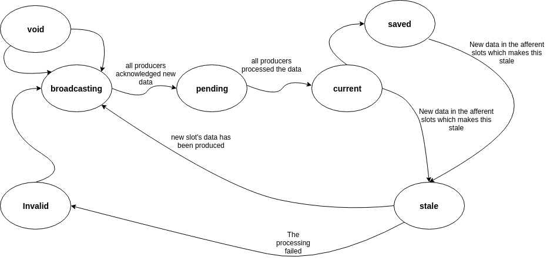

The MRPR database, slots and producers¶
The system is based on two abstractions of data and processing: slots and producers. The slots are linked to entries in a database called MRP table, where the acronyms stands for Market Data, Reports, Parameters and Risk.
Slot¶
The slot in an abstraction of a collection of homogeneous data, which is indexed by a string name and whose data is indicated by a date and a collection of supplementary keys. It is called slot because once data is generated and wrapped in a slot, it is inserted into the MRP table. Example of slot’s name may be MarketData.Vanilla.Totem or ImpliedVolatility.Vanilla.Totem or ProductRate.TRS.Totem.
Todo
It is unclear how the slot can be defined, i.e. it represents a homogeneous dataset, but how is the scope determined? For example, option prices should be grouped into a unique slot based on expiry/strike/underlying or just underlying? Probably the grouping should be also determined by the primary keys, so the question is: what are the primary keys for a slot?
This must be decided or it won’t be possible to handle proxy.
Slot types¶
These are the types:
- Report
This represents producers’ report, for example back-testing results.
- MarketData
As the name says - contains market data
- Parameter
Represents calibrated parameters - model inputs but also spreads to be used for Proxies.
- Risk
Represents risk. The aggregation should be at underlying level, though the data itself should have expiry granularity.
Todo
It must still be defined what risk should be considered here.
- Tau
- EquityRho
- Dividends
- VarSwapVolBasis risk
- dTvdVolOfVolATMBackward
- VarSwapVIXBasis risk
- dTvdLVSVVolOfVol
Note
How do we ensure that the calibrated parameters are used consistently?
Usually it is not a problem, unless the parameters are calibrated for the same market data.
For example, some underlying may have product rate and divs calibrated from Vanilla prices, other from DivSwap + Vanilla, other from TRS + DivSwap, other from TRS + Vanilla. One approach could be based on priority. For product rate could be:
- Vanilla only -> ProductRate=0, Dividends=0
- DivSwap + Vanilla -> ProductRate=1, Dividends=1
- TRS + Vanilla -> ProductRate=2, Dividends=2
It seems that it is the methodologies that set the priority in case it calibrate multiple parameters.
Slots states¶
Slots are characterized by a state:
- broadcasting
- The slot’s data was updated and processing has not started yet. We need This state to trigger Producers, for example when the system is restarted
- pending
- The slot’s data has just been generated and all linked producers are processing the data
- current
- The slot’s data has been processed by all the linked producers.
- saved
- The slot’s data was saved to the database(s)
- invalid
- Some non-recoverable error happened during the processing
- stale
- At least one of the upstream slots changed status to Failed/Updated/Stale
- void
- This is the starting state of a slot, when no data has been produced yet
Warning
The slots’ state is a mess, we need clarity, and a clear definition of what those states really mean!!!
The chart below shows how the state evolves and what triggers changes in the state
{kind=link}
Brainstorming¶
How do we handle proxies, or cases in which many input slots feed into a fewer numbers of output slots?
To to this there must be a logic that performs aggregation of slots’ keys.
Warning
Some slots may need to be linked, for example product rate and dividends are related. THIS WAS ADDRESSED BY THE PRIORITY!
The SID¶
Each data in the slot is identified by a unique id the SID. This is not a duplicate of the slot’s key as the date triggers a new SID.
The Listeners¶
To each slot is associated a list of producers, or listeners in this context, that has the slot as required or optional, see next section for the definition. This list is required so that, upon generation of new or updated slots, the depending producers are notified.
A journey inside the slot life!¶
- A slot is produced and it goes into the table with ‘updated’ state.
- All listeners are notified and acknowledge the slot was updated
- The listeners also notify the slots they produce of the event, and those slots become ‘stale’
- The producers perform their job, return the results and notify the slot of their completion
- The triggering slot compare the listed of producers which acknowledged the change and the producers which returned the results
- If all producers have performed the task, the slot’s status becomes ‘current’
- Now one of the slots feeding into this slot becomes ‘stale’. This slot becomes stale too and notified to all producers
Producer¶
A producer is a process which, given a list of optional input slots, produces a number of output slots. A producer will always have at least one slot as output. A producer also must define a list of:
- Required input slots
- These are the minimum data required by the producer to perform the task. A required slot can be inclusive or exclusive, which means that the slot must not be available to trigger to producer. A required slot can then be fault_tolerant, i.e. failed slots are still considered for joining operation, otherwise a failed input slot make stale all produced slots. This differentiation is needed to handle proxies.
- Filters
- Filters are applied to the slots’ key to restrict the Producer activities to a narrower set of slots.
- Provided slots
- The outputs that the producer commits to provided. The producer assigns to each output slot a priority. No other producer may not output the same slot with equal priority.
Furthermore, each running producer is identified by a unique id or pid
Note
The “Optional Slots” have been removed. That behavior can be simulating adding new producers having those optional slots as required.
Producer states¶
The diagram below shows the state diagram for the producer:
Note
The scheduled state was introduced to handle methodologies based on aggregation of data (for example proxy). For those, it is pointless kicking-off new producers as soon as new data is available. Better to schedule, i.e. delay, the processing for a while as very likely new data will become available in the meanwhile.
{kind=link}
Brainstorming¶
The producer is a template for actual running methodologies. It establishes relationship with data and how slots are aggregated. But running producers are instance of the producer template.
Producer types¶
There are different type of producers:
- Demoniac producers
- This producer is constantly running in the background. Example of this type of producers is the Totem Producer, which continuously polls for new data from Totem
- Non-demoniac producers
- They have limited life span and terminate once all output slots are produced
Producer output¶
Apart from the output slots, the data generated by the processing, the producer must return the input slots’ used for the production of each output slot. This is needed to build a dependency tree. Indeed, once the producer output is processed and output slots’ stored in the MRP table, the dependency tree SLOT_TREE must be updated accordingly.
Producer Proxy¶
All producers are executed through a common interface called Producer Proxy. Proxies are divided into
- Multi-threaded (MT) Proxies
- Producers are not executed in a different process. For example, producers which simply aggregates or filters data can be run in a separated thread. Note that producers accessing analytic funcionality (CAL, Zuul) may not be multi-treaded producers
- Multi-processing (MP) Proxies
- Producers are executed in their own process and potentially in a different machines
The Proxy is responsible for join together all the slots needed for the producer to run. A set on joined slots constitute an parcel. An parcel is a collection of slots required to produce at least one output slot. For example, implied volatility and forward for asset A constitutes a parcel for the volatiity fitting producer
A further differentiation is in
- Independent Proxies
- Producers are executed as soon as parcels are available, but subject to batch sizes MIN_BATCH.
Todo
Add example of Independent Proxies
- Dependent Proxies
- Producers are triggered once all the input slots’ producers are terminated. This type of proxy is needed to execute methodologies based on the whole aggregated data, for example calculation of VarSwapVolBasis. For Dependent Proxies MIN_BATCH=9999
In order for Proxy to work, they must:
- Receive notification of changes in status of required and optional slots
- Aggregate the slots into parcels.
- Trigger the actual producer once a set of conditions are met
The conditions to be satisfied to trigger a calculation are:
- The number of available parcels are more than MIN_BATCH > 0.
- The number of available parcels is less than MIN_BATCH but the parcels have been available for more than MAX_WAIT_TIME.
- The proxy is Dependent and all the input slots’ producers have terminated
A journey inside the producer life!¶
A slot is completed. It notifies this to the producer, which is one of the listeners, by communicating the sid. The producer acknowledges it (do we really need this? Yes I do! This is required to sort out the issue with notifying producer with updated data) and registers the new available data. It then checks whether it has received the required number of slots. If it does, then parcel is sent for processing. Now, it can happen that one of the input slots becomes invalid, or than a new optional slot becomes available. In this case the producer is inhibited. A signal is sent to the running producer. Once the producer returns the output, either because it stopped processing upon inhibition signal or because it terminated is job, that output is simply neglected but the output slot must be set to invalid. Why we need this? Not sure, let’s assume we need to flag the failure.
Joining slots into parcels - proposal¶
- a slot is received
- if the new slow has higher priority that same slot already stored in the parcels_table, then the new slot is inserted
- consider all the producers affected
- join the required slots together
- projects the keys on the producer aggregation keys. This is the key point: we know upfront which producers are affected
- select all the slots with keys on each distinct projection
- If a producer with that aggregation still running then inhibits it before starting the new one
Note
steps 2-6 must be in a separate function, which may be possible to call for example by a scheduler.
Note
to joining at step 3 may not be required, but at the moment it seems required to process batches of different slots, for example for proxies calculation
Warning
A tricky aspect is that the calculation is triggered by an event! So for example this makes difficult to restart from a crash. This can be addressed leveraging on the slot updated status. So slots which are pending can have their status overridden to updated.